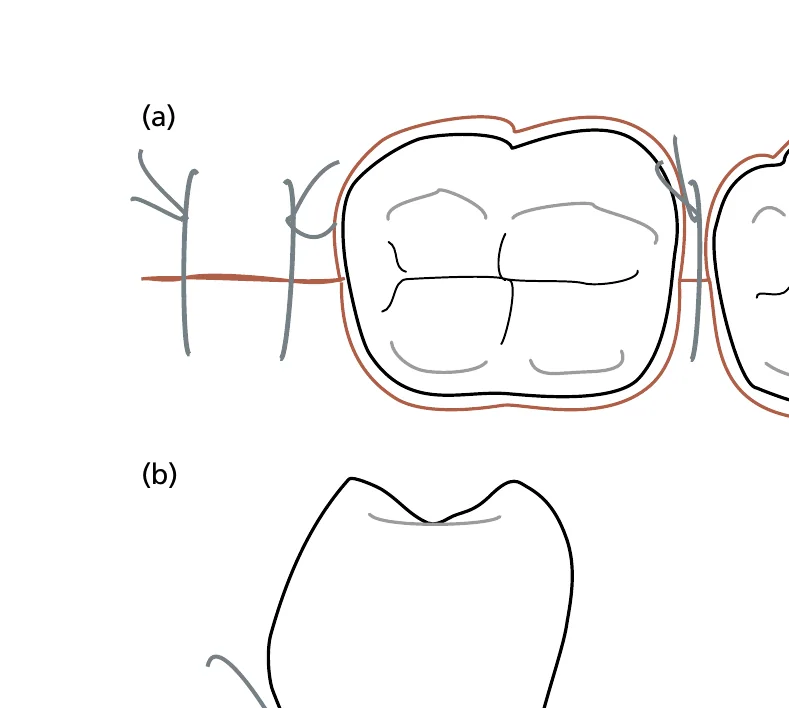
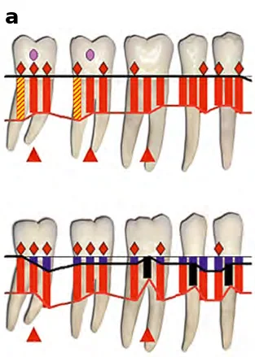
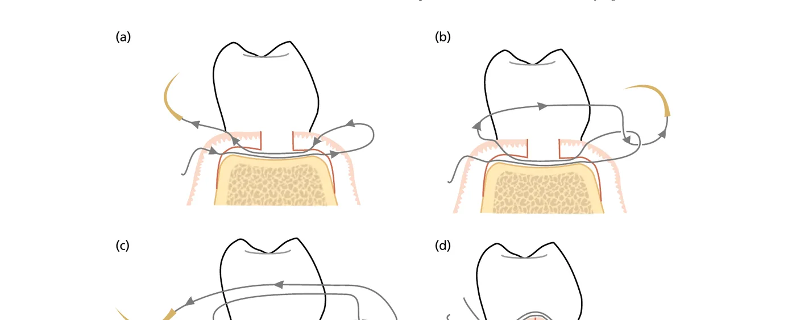

نسخه استخراجشده؛ ترجمه یا تأیید علمی انجام نشده است. وضعیت: captured
| جذبی | غیرجذبی | |
|---|---|---|
| نمونهها | کتگوت ساده و کرومیک، پلیگلاکتین (ویکریل)، پلیگلیکولیک اسید | ابریشم، نایلون، پلیپروپیلن (پرولن)، ePTFE |
| مزیت | نیاز به برداشتن ندارد؛ مناسب نواحی صعبالوصول و کودکان | مقاومت کششی پایدار، کنترل بهتر |
| عیب | زمان جذب متغیر؛ واکنش بافتی بیشتر در کتگوت | نیاز به مراجعه برای برداشتن |
بافته (ابریشم، ویکریل): گرهزنی آسانتر و گره پایدارتر، اما 🔴 اثر فتیلهای — باکتریها را در امتداد رشته به عمق زخم میکشد.

تکرشتهای (نایلون، پرولن، ePTFE): 🟢 تجمع پلاک بسیار کمتر، اما گرهزنی دشوارتر و نیاز به گرههای بیشتر.
🔑 در جراحیهای حساس به عفونت — بهویژه بازسازی و پیوند — بخیه تکرشتهای ارجح است، چون اثر فتیلهای ابریشم میتواند ناحیه بازسازی را آلوده کند.
معمولاً ۷ تا ۱۰ روز پس از عمل. زودتر: خطر باز شدن زخم. دیرتر: التهاب و رشد اپیتلیوم در مسیر بخیه.
| تکنیک | کاربرد |
|---|---|
| منقطع ساده (Interrupted) | پرکاربردترین؛ نزدیک کردن دو لبه فلپ باکال و لینگوال |
| هشتی (Figure-8) | وقتی لبهها نباید کاملاً به هم برسند یا فضای بیندندانی باز است |
| معلق دور دندان (Sling) | 🔑 وقتی فلپ فقط در یک سمت بلند شده؛ فلپ را به دندان میآویزد بدون آنکه به فلپ مقابل وابسته شود |
| ممتد (Continuous) | نواحی وسیع چنددندانی؛ سریعتر اما پاره شدن یک نقطه کل بخیه را باز میکند |
| تشکی افقی و عمودی | ایجاد تماس پهنتر لبهها؛ در پیوند بافت همبند و ناحیه با کشش |
| ماتریکس بیندندانی | حفظ دقیق پاپیلا در تکنیکهای حفظ پاپیلا |
🔑 بخیه معلق، انتخاب کلیدی فلپ جابهجاشده به اپیکال است — چون به تو اجازه میدهد فلپ باکال و لینگوال را مستقل از هم در ارتفاع دلخواه ثابت کنی.


سوزن از بافت متحرک به بافت ثابت عبور کند.
فاصله از لبه زخم حداقل ۲ تا ۳ میلیمتر تا بخیه نبُرَد.
گره روی بافت قرار نگیرد، بلکه در کنار خط برش.
بخیه فقط لبهها را نزدیک کند، نه اینکه آنها را تحت کشش و ایسکمی قرار دهد.
امروزه بیشتر پانسمانها بدون اوژنولاند (اوژنول تحریککننده بافت است).
| میکند | نمیکند |
|---|---|
| محافظت مکانیکی زخم | 🔴 خاصیت ضدمیکروبی ندارد |
| راحتی بیمار و کاهش درد | بهبود را تسریع نمیکند |
| ثابت نگه داشتن فلپ جابهجاشده | جایگزین بخیه صحیح نمیشود |
| کنترل بافت گرانوله اضافی | در همه جراحیها ضروری نیست |
⚠️ پانسمان اجباری نیست. اندیکاسیون اصلی: زخم باز مانند ژنژیوکتومی، فلپ جابهجاشده که به تثبیت نیاز دارد، و راحتی بیمار. در فلپ بخیهشده با ترمیم اولیه، اغلب لازم نیست.
| موضوع | دستور |
|---|---|
| درد | مسکن پیش از پایان اثر بیحسی شروع شود؛ NSAID خط اول در بیمار بدون منع |
| خونریزی | فشار با گاز مرطوب ۱۵ تا ۲۰ دقیقه پیوسته؛ پرهیز از تف کردن و مکیدن |
| تورم | کیسه سرد متناوب در ۲۴ ساعت نخست |
| بهداشت ناحیه عمل | 🔑 مسواک زدن ناحیه عمل ممنوع تا برداشتن بخیه؛ بهجای آن دهانشویه کلرهگزیدین |
| سایر نواحی | بهداشت معمول ادامه یابد |
| تغذیه | نرم و خنک در روزهای نخست |
| سیگار | پرهیز کامل — اثر مستقیم بر بهبود زخم |
🔑 مهمترین دستور پس از عمل: کلرهگزیدین دقیقاً به این دلیل تجویز میشود که بیمار نمیتواند ناحیه را مکانیکی تمیز کند — این همان اندیکاسیون کلاسیک کوتاهمدت آن است که در درس کنترل شیمیایی پلاک خواندی.
خونریزی که با فشار کنترل نمیشود.
درد شدید و رو به افزایش پس از روز سوم.
تب یا تورم پیشرونده.
ترشح چرک یا بوی بد شدید.
⚠️ اشتباه رایج ۱: پانسمان خاصیت ضدمیکروبی ندارد و در همه جراحیها ضروری نیست.
⚠️ اشتباه رایج ۲: بخیه تکرشتهای پلاک کمتری جمع میکند؛ ابریشم اثر فتیلهای دارد.
⚠️ اشتباه رایج ۳: بخیه معلق، انتخاب فلپ یکسمتی و جابهجاشده به اپیکال است.